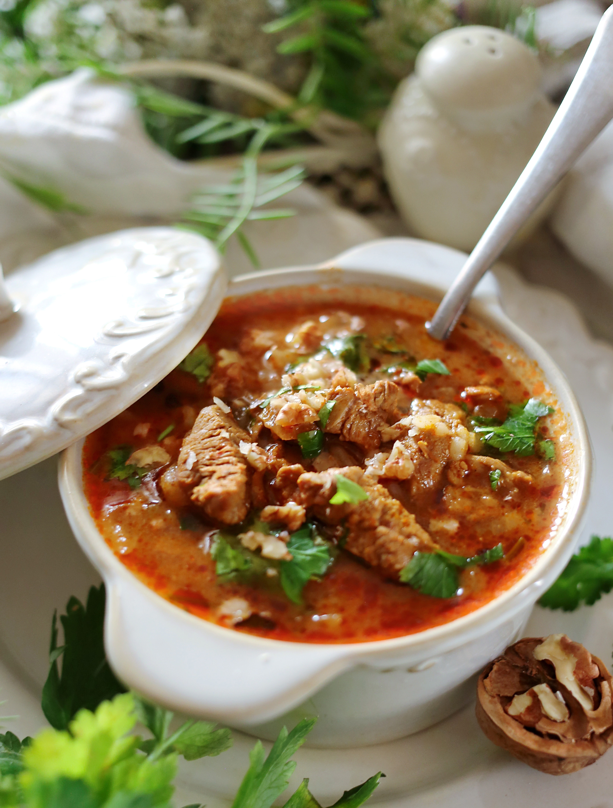

Что может быть лучше сытного, ароматного, чуть островатого грузинского харчо? Вопреки устоявшемуся мнению, харчо готовят не только из говядины: его можно сделать из баранины, свинины, любой птицы и даже из осетрины. Но мы выбрали классику. В харчо для кислинки обычно добавляют тклапи (высушенное пюре из мякоти алычи, похожее на тонкую пастилу, можно найти в продаже на рынках) и винный уксус. Остроту регулируйте по своему вкусу. Харчо не стоит варить впрок, так как рис во время хранения сильно разбухает.